Caso 016 · Johan Celsing · 2013 · funerario (crematorio)
Un crematorio que no es un edificio en el claro sino tres pabellones bajo el dosel del bosque, uno por circuito: A (llegada y atención a familias, 18x16 m), B (ceremonia y despedida, 21x24 m) y C (zona técnica, 21x20 m, hundido en la colina del sureste). Los une una pasarela cubierta A-B de 6x3 m y un corredor cubierto C-B de 3 m por el que viaja el féretro sin pisar el espacio público.
El boceto sugiere un único contorno en el claro más un óvalo (la colina). Se cuestionan tres supuestos que el encargo no impone: (1) que sea una sola pieza: se trocea por circuitos; (2) cómo toca el suelo: A y B sobre solera de CLT apoyada en un zócalo corrido de hormigón de 40 cm sobre lecho de grava compactada (sin sótano ni excavación profunda, que respeta las raíces); C excavado en la colina, con el terreno subiendo hasta +6,0 m a su espalda y la cubierta vegetal enrasándose con ella; (3) el sistema: madera (paneles de CLT y vigas laminadas) en A y B, hormigón solo en C por la carga térmica y la resistencia al fuego. El claro de 70x70 m no se llena: los pabellones quedan al borde y el centro es el patio-claro de espera (352 m²), con cuatro árboles conservados.
| Criterio | P1 monobloque enterrado | P2 tres pabellones (elegido) |
|---|---|---|
| Movimiento de tierras | ~2.500 m³ (sala de 128 pers. con 6 m libres) | ~700 m³, solo C |
| Circuitos | cruce posible dentro de un volumen | familias O→A→B; servicio NE→C; féretro C→B por corredor cerrado |
| Arbolado | huella continua de 1.000 m², tala de borde | huella de zócalo ~35 m² en A/B, 420 m² en C |
| Altura | 1 planta | 1 planta, máx. 7 m; chimenea 9 m |
Familias: ramal oeste → aparcamiento (14 plazas, 2 de ellas reservadas de 3,6 m) → camino peatonal llano pavimentado de 3 m → plaza de llegada (336 m²) → vestíbulo de A (136 m²) → pasarela cubierta → vestíbulo de ceremonias de B (126 m²) → salas. Servicio: camino NE → patio de servicio y maniobra (14x12 m, con 2 plazas de servicio y la parada del coche fúnebre frente a la doble puerta de recepción) → recepción de féretros → cámara fría → pasillo técnico → sala de hornos. El féretro llega a la sala grande por el corredor C-B y su puerta sur. Las dos pantallas (patio este y patio de servicio) se separan con una pantalla de madera de 2,4 m.
| Exigido | Propuesto | Cumple / desviación |
|---|---|---|
| Documentos: situación, plantas, secciones, alzados, detalle | U01, U02, P01-P02, S01-S03, S04-S07, D01, V01-V02 | Cumple |
| Espacios de ceremonia, grupos distintos | Grande 182 m² (128 butacas), media 64 m² (32), íntima 48 m² (5 sillas, ampliable abriendo el paso con la media) | Cumple. La íntima se atraviesa desde la media: se trata como ampliación de la media, no como sala independiente (desviación asumida) |
| Vestíbulo de recepción y espera | 136 m² en A + 126 m² en B | Cumple |
| Familiares y administración | 2 salas (44 y 40 m²), administración 44 m², entrega de cenizas | Cumple |
| Aseos públicos accesibles | 4 (1 accesible con círculo de 1,50 m) para 128 personas | Cumple |
| Recepción de féretros y vehículos, acceso separado | Recepción 36 m², parada y 2 plazas de servicio, camino NE | Cumple |
| Cremación y zona técnica | Hornos (2), depuración, cuarto eléctrico y de climatización, almacén/basuras, chimenea de 9 m | Cumple |
| Personal | Oficina y descanso, vestuario con cabina de ducha | Cumple. Vestuario unisex para 4-6 operarios; entra desde el pasillo o el patio (sin esclusa propia: banco y cambio de calzado en el umbral) |
| Exteriores | Plaza, patio-claro, patio este, patio de servicio, aparcamiento | Cumple |
| Superficie | Útil interior 1.263 m² (comprobación), exterior 1.319 m² | Coherente con 1.000-1.800 m² de un crematorio de 2 hornos |
| Altura ≤ 9 m, 1-2 plantas | 1 planta, cumbrera 7,1 m, chimenea 9,0 m | Cumple |
| Arbolado | Huellas rodeando árboles; zócalo corrido de poca excavación | Cumple |
| Elemento | Material (modelo) | Acabado |
|---|---|---|
| Fachada A/B | madera (CLT) | madera carbonizada ventilada |
| Muros de C | hormigón | hormigón visto |
| Forjados A/B | madera | tarima / suelo de madera |
| Solera de C | hormigón | losa pulida |
| Cubierta A/B | madera | chapa plegada sobre CLT |
| Cubierta C | tierra | vegetal |
| Tabiques | madera / hormigón | yeso pintado |
| Chimenea | hormigón | hormigón visto |
Agua: acometida desde el camino NE, cuarto de instalaciones junto al almacén. Saneamiento: red separativa hacia fosa/depuradora del cementerio; aseos agrupados en B (ejes x 34-48, y 44-48) con patinillo común. Pluviales: las cubiertas de A y B vierten al norte a una franja de grava de infiltración de 1,3 m (modelada y rotulada en P01 y U02), sin recogida en depósito; la cubierta vegetal de C retiene el agua y el excedente va al drenaje perimetral de su muro trasero. Electricidad: cuarto eléctrico y de climatización de 10 m² (x 52,5-55), accesible desde el pasillo técnico. Ventilación: natural cruzada en A y B; mecánica con recuperador en la zona técnica. Humos: los hornos descargan por sendos conductos de humos a un colector, que atraviesa el muro hasta la depuración (filtro de mangas) y de ahí a la chimenea de hormigón de 9 m, junto a la depuración (colector dibujado a trazos en P01); es el único elemento sobre 7 m y su emisión cumple la normativa de emisiones del encargo.
Muro de fachada, de fuera a dentro: madera carbonizada 22 mm; cámara ventilada y rastreles 40 mm; aislante de fibra de madera 200 mm; panel CLT 100 mm; tablero de yeso 12,5 mm. Cubierta: chapa plegada 30 mm; impermeabilización; aislante 240 mm; CLT 140 mm. Forjado: tarima 22 mm; CLT 200 mm; aislante 200 mm, sobre grava compactada de 150 mm y zócalo corrido de hormigón (capa «Grava compactada» en D01). Juntas de 10 cm con fieltro de lana mineral y tapajuntas de chapa en los encuentros pasarela-A, pasarela-B y corredor-B.
Masa y tierra en C (oscilación diaria de 6-9 °C); aislamiento de 20-24 cm en A/B; sin huecos al suroeste (viento dominante); huecos grandes al N, E y S hacia el bosque y sol bajo de invierno al S; cubiertas con pendiente al norte para evacuar nieve lejos de las entradas.
Todo a +0,00, sin cambios de nivel: itinerario llano desde el aparcamiento. Puertas de 0,90 m (1,20-2,00 m en salas); aseo accesible con círculo de 1,50 m; plazas reservadas de 3,6 m (símbolo PMR en P01). La sala grande (128 personas) tiene tres salidas: doble puerta oeste a la plaza, doble norte al vestíbulo y puerta sur del féretro.
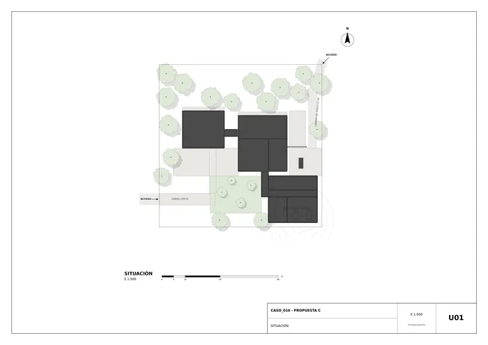
U01 · Situación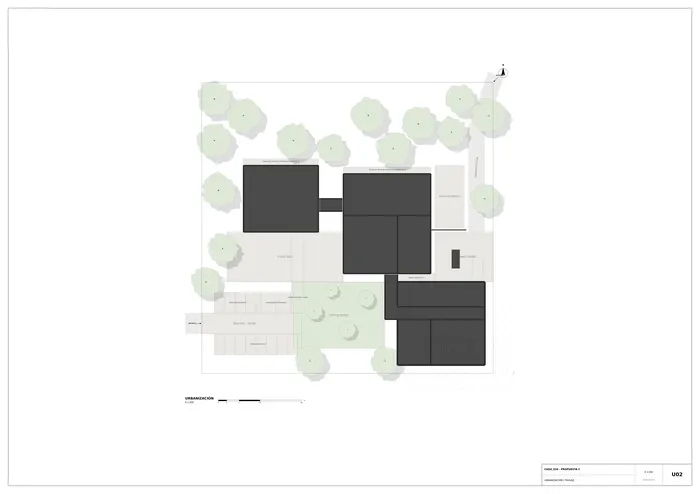
U02 · Urbanización y paisaje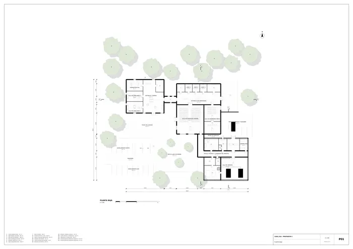
P01 · Planta baja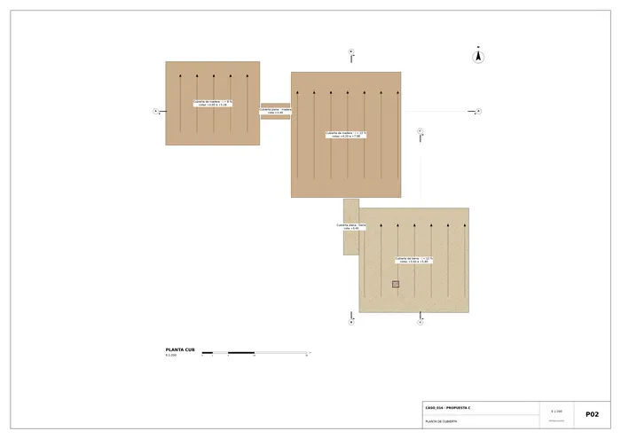
P02 · Planta de cubierta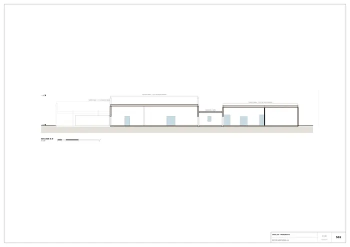
S01 · Sección longitudinal A-A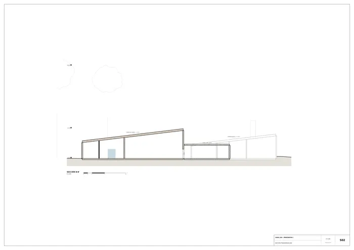
S02 · Sección transversal B-B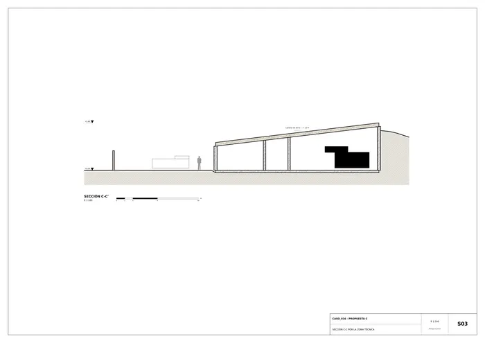
S03 · Sección C-C por la zona técnica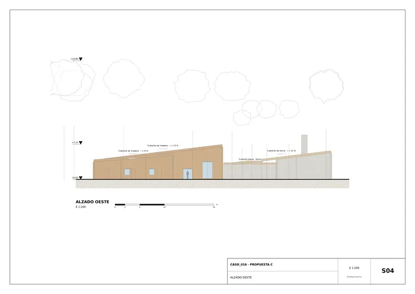
S04 · Alzado oeste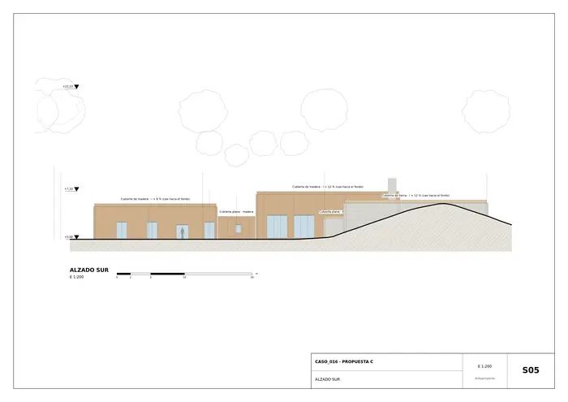
S05 · Alzado sur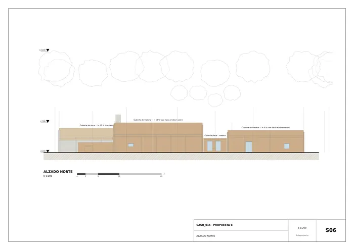
S06 · Alzado norte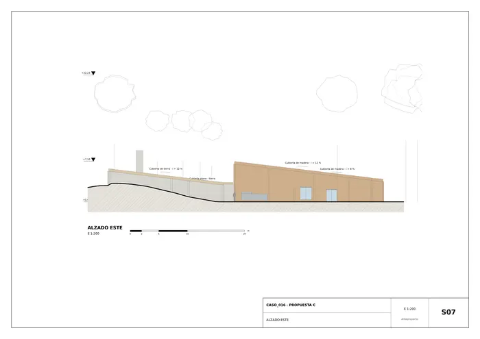
S07 · Alzado este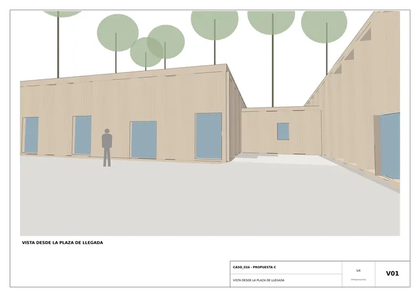
V01 · Vista desde la plaza de llegada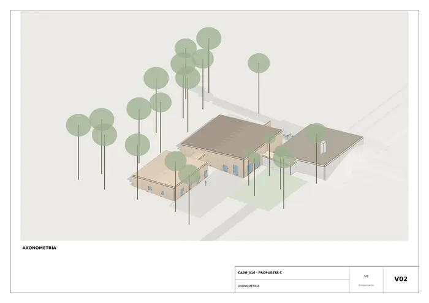
V02 · Axonometría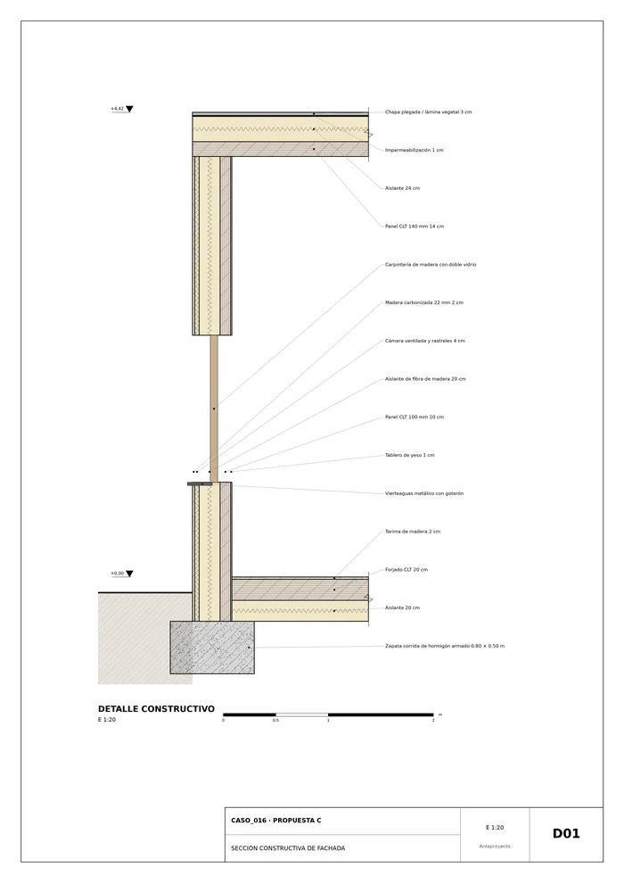
D01 · Sección constructiva de fachadaMemoria de la propuesta tal como la entregó el sistema. Se han omitido las notas internas del proceso (revisiones, control de reconocimiento y referencias a archivos de trabajo).